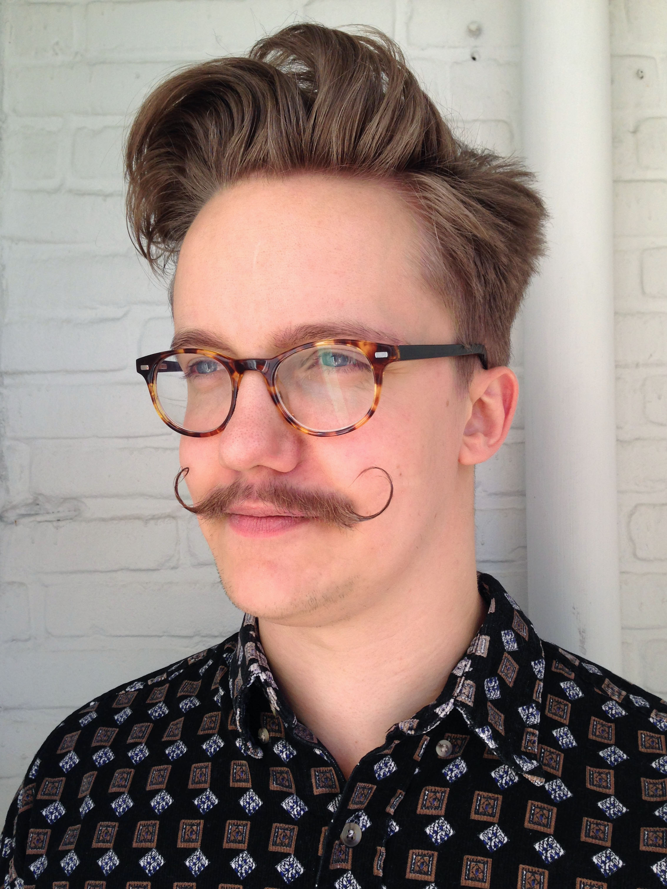
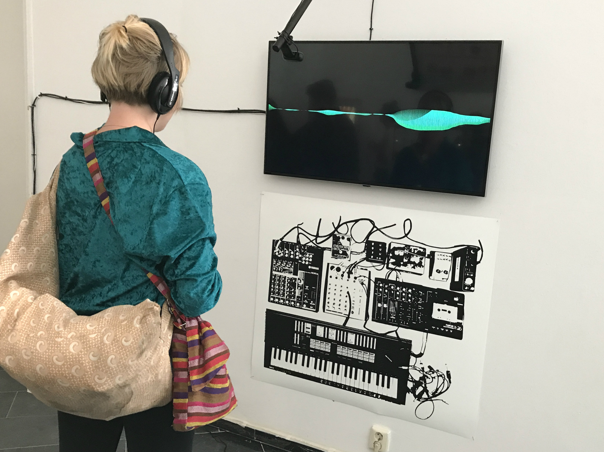
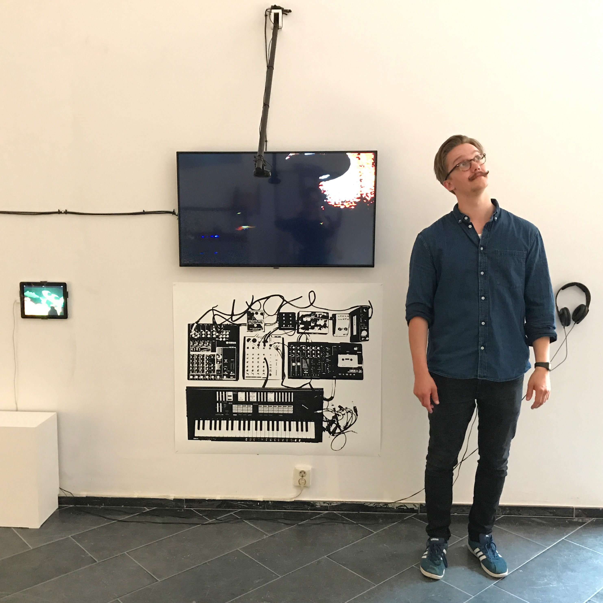
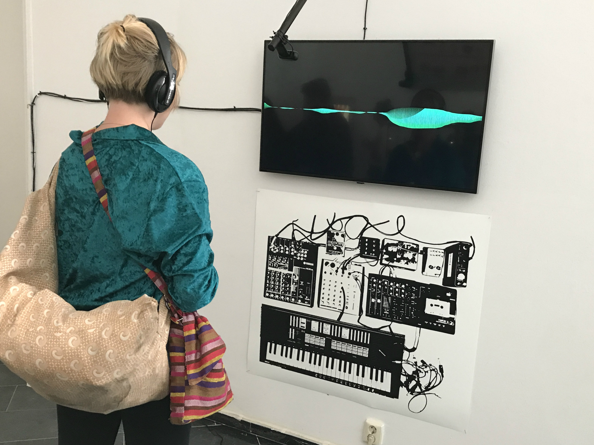
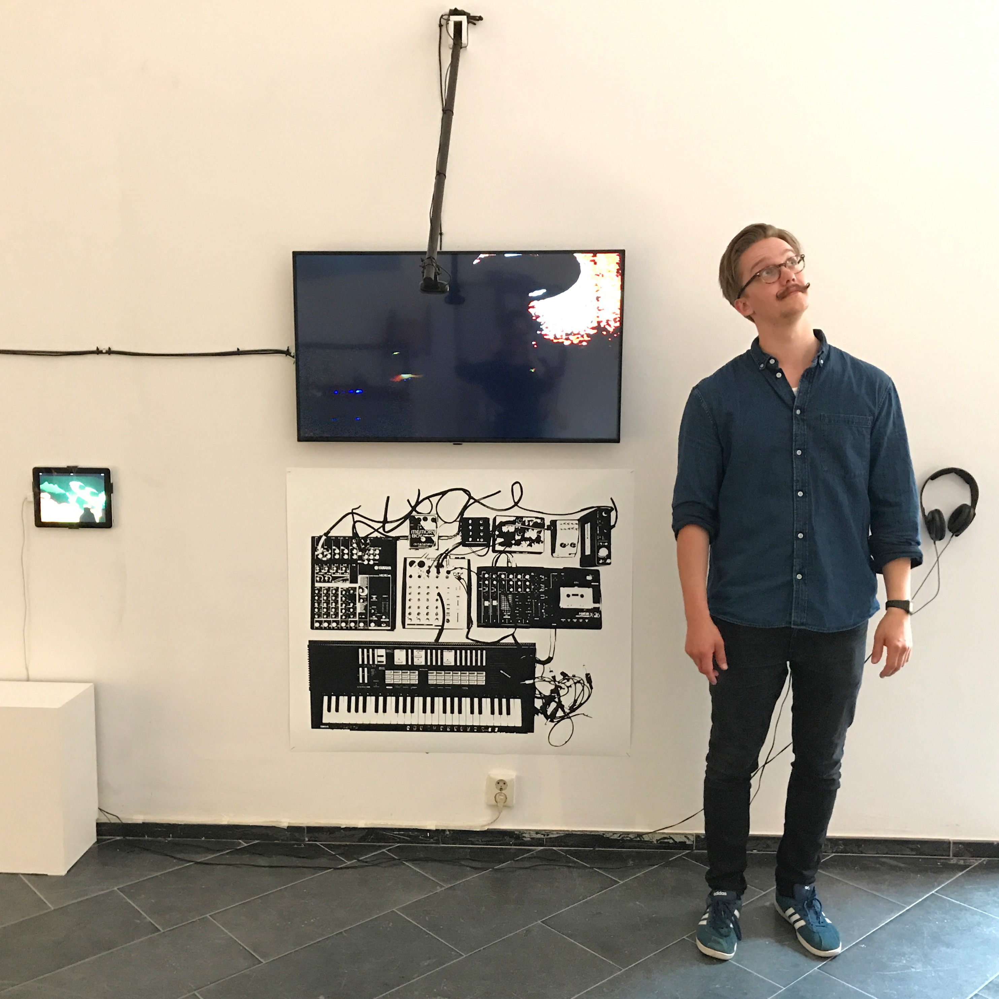

Andri

Pétur
P R O D U C E R
P R O G R A M M E R
P E R F O R M E R
25 ára tónlistartæknir búsettur á ísafirði ásamt unnustu og syni. Útskrifaðist með bakkalársgráðu í tónlist úr Listaháskólanum í Utrecht haustið 2017. Starfar sem kennari við Tónlistarskóla Ísafjarðar og sinnir einnig lagsmíðum og lausaverkefnum sem einyrki. Hefur brennandi áhuga á tónlist, bókmenntum og forritun.
Andri hóf tónlistarferil sinn 9 ára að aldri þegar hann byrjaði fór að læra á fiðlu með það fyrir augum að verða næsti Mozart. 12 ára gamall byrjaði hann að kenna sér á gítar, því það væri frekar við hæfi að verða næsti Kurt Cobain. Seinna, eftir að hafa dýft tánum í grugg og þungarokk og skolað af sér mestu unglingaveikina tók breska innrásin með Lennon hershöfðingja fremst í farabroddi við taumunum. Í kjölfarið uppgötvaði hann beat og bóhema, setti upp barðastóran hatt og textar hans fylltust af djúpum myndrænum myndlíkingum. Því að Bob Dylan hafði rétt fyrir eftir allt saman. Svo sá hann ljósið og uppgötvaði trommuheila, hljóðgervla og óþrjótandi kraft LCD Soundsystem. Er ekki raftónlist leið hinna réttlátu eftir allt saman? Og eitthverstaðar á milli hólfskeflu hamskipta tókst honum að verða hugfanginn af írafár, rappi, jazz, blús & heimstónlist og óteljandi öðrum stefnum og straumum.
Eftir þessa háskaför í gegnum tónlistarstíla tókst honum (að eigin mati að minnsta kosti) að komast heill á geði út á hinum endanum og kann að meta allar stefnur, stórar og smáar. Hann velur sér innblástur frá hverri og einni eins og honum finnst henta hverju verkefni fyrir sig. Gerðu það sjálfur viðhorf punksins, skáldskaparfylltir textar Cave og Waits, grúvið úr blúsnum og sannfæringin dískósins um að allt verði allt í lagi á endanum.
Með viðhorfinu minna er meira til tónsmíða, vonar hann að geta haft áhrif með tónlist sinni á aðra á sama hátt og hann hefur verið undir áhrifum frá sínum fyrirmyndum.
2013-2017
Listaháskólinn í Utrecht (Hogeschool voor de Kunsten Utrecht)
Audio design
2012-2013
Fonty’s Taalcentrum
Hollenskunám
2009-2011
Menntaskólinn á Ísafirði
Stúdentspróf
2017
Tónlistarskólinn á Ísafirði
Gítar og raftónlistar kennari
2017
Grunnskólinn á Ísafirði
Forritunar, tónmennta og gítar kennari.
2015-2016
STEIM
starfsnám.
2015-2017
Bræðraborg Kaffihús/cafe
Kaffibarþjónn.
2012-2013
Veitingastaðirnir KB52 and Het Berlage.
Uppvaskari.
2012
Mýrarboltafélag íslands
Ritstjóri heimasíðunnar myrarboltin.net
2010-2013
Byggðasafn Vestfjarða
Safnvörður
2010-2012
Bókasafnið á Ísafirði
Vinna með skóla sem safnvörður.

 


